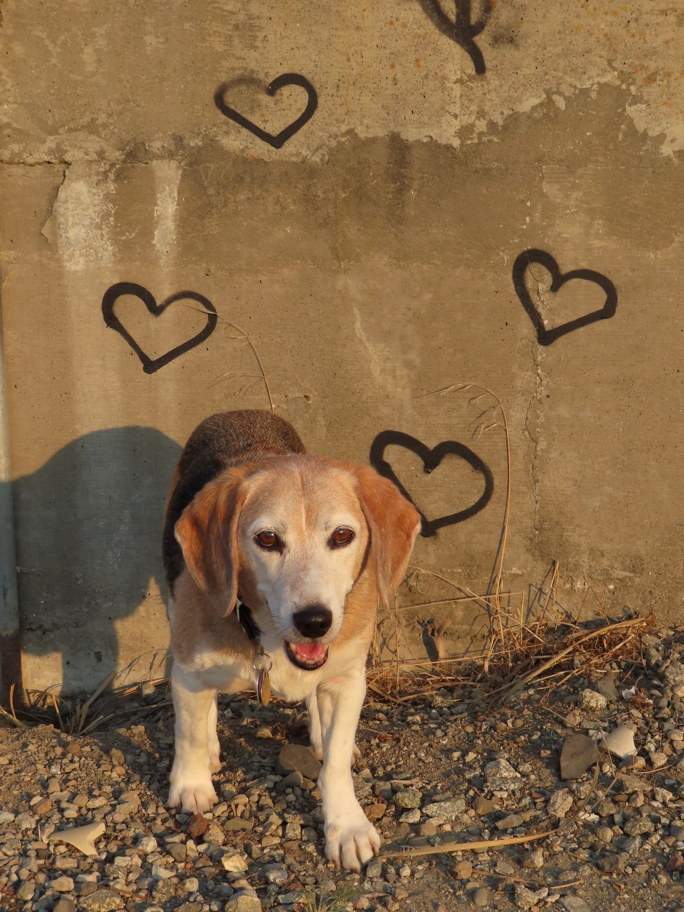

Next to the platform at the Bayshore Caltrain station. This was the first weekend of Camp Fire smoke affecting San Francisco. We'd stayed inside most of the weekend due to smoky air but the boys needed some exercise. We were able to cross the pedestrian bridge and walk off the end of the west platform. Security was light, as an ongoing electrification project has stopped Caltrain service north of this station for the weekend, so we were able to get close to the tunnel mouth under Blanken before being stopped.
hearts Huxley Beagle sanfrancisco